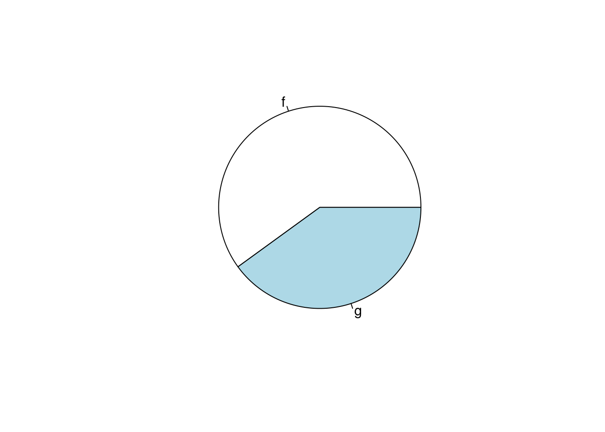
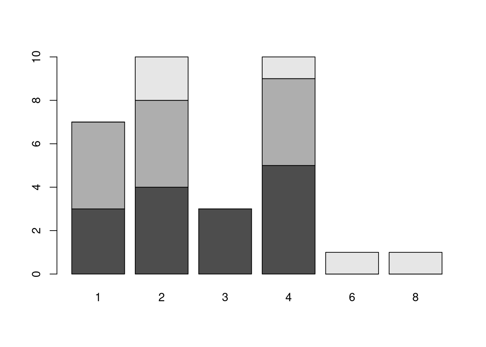
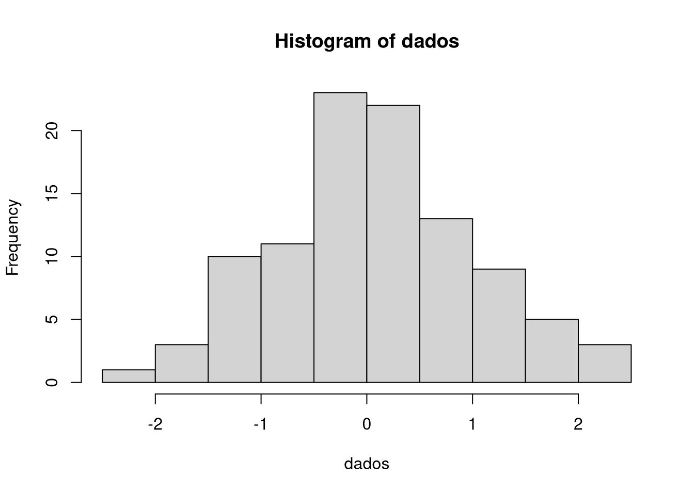
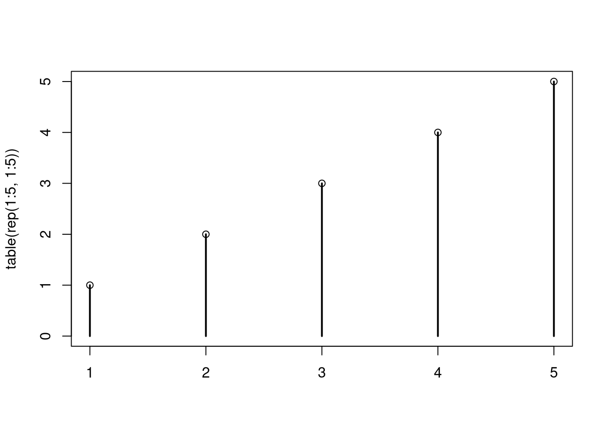
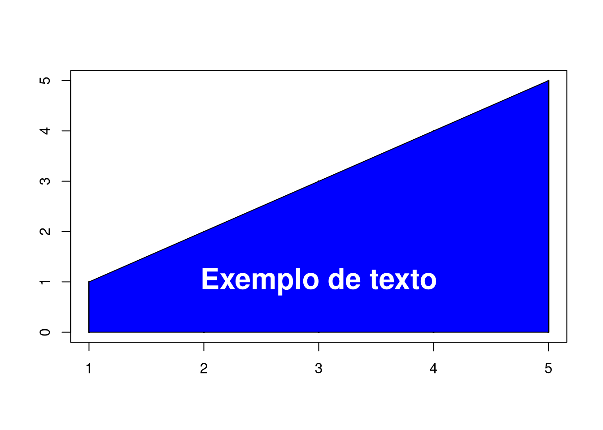
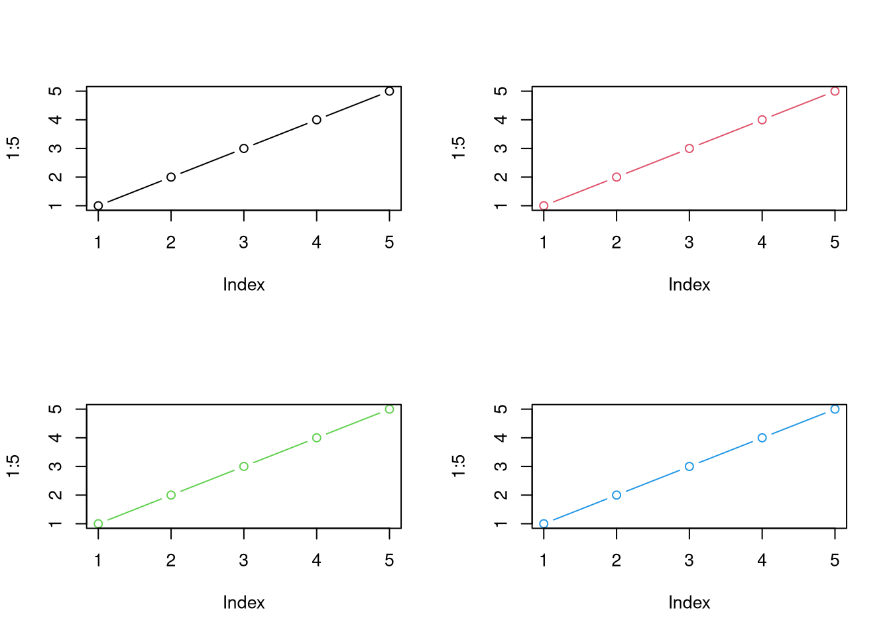
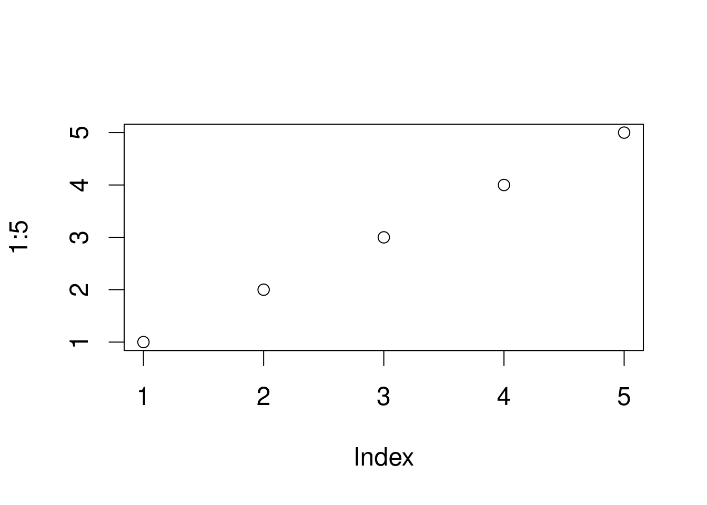
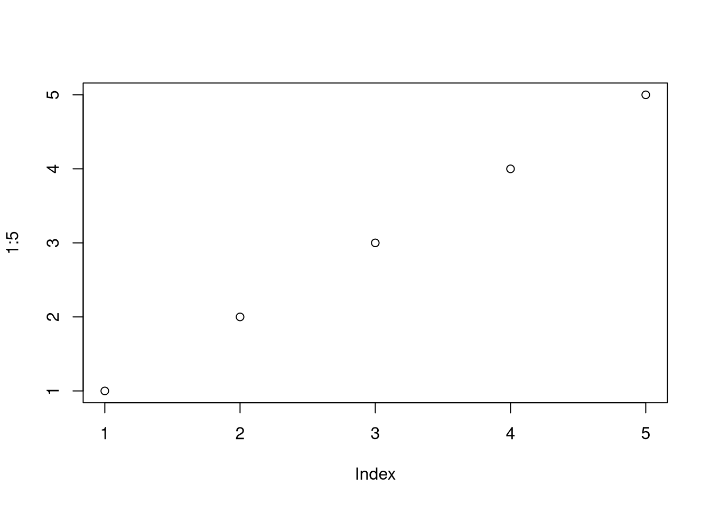

3 Gráficos
3.1 Gráficos para variáveis qualitativas
3.1.1 Gráficos de Barras
Para criar gráficos de barras no R, podemos utilizar a seguinte sintaxe barplot(dados).
Lembrando que o argumento dados, deve ser um objeto de tipo vetor ou matriz.
É recomendado utilizar a função table ao gerar vetores para gerar gráficos de barras.
No exemplo abaixo, são criadas 10 barras não nomeadas com valores de 1 a 10.
barplot(1:10)
No exemplo abaixo, é utilizado um vetor com elementos nomeados (a e b), quando geramos um vetor com a função table temos o mesmo resultado, e com isso as barras no gráfico também são nomeadas.
barplot(c("a" = 2, "b" = 4))
É importante lembrar que isso não se aplica a objetos de tipo lista, como no código abaixo.
barplot(list("a" = 2, "b" = 4))## Error in -0.01 * height: non-numeric argument to binary operatorNo exemplo abaixo, vemos como objetos de tipo matriz podem ser usados dentro da função barplot.
matriz <- matrix(c(2, 5, 7, 2), 2, dimnames = list(c("n1", "n2"), c("a", "b")))
matriz## a b
## n1 2 7
## n2 5 2barplot(matriz)Abaixo, vemos como tabelas podem ser usadas para gerar o gráfico de barras.
tabela <- table(c(rep("a", 2), rep("b", 4)))
tabela##
## a b
## 2 4barplot(tabela)Também é possível utilizar a função barplot para gerar um gráfico de colunas horizontais com o argumento horiz = TRUE.
Abaixo, vemos também a função table sendo usada em conjunto com data.frame’s.
dados <- data.frame(letra = c(rep("a", 5), rep("b", 7),
rep("c", 2), rep("d", 8)))
dados## letra
## 1 a
## 2 a
## 3 a
## 4 a
## 5 a
## 6 b
## 7 b
## 8 b
## 9 b
## 10 b
## 11 b
## 12 b
## 13 c
## 14 c
## 15 d
## 16 d
## 17 d
## 18 d
## 19 d
## 20 d
## 21 d
## 22 dbarplot(table(dados$letra), horiz = TRUE)
Utilizando data.frame’s, podemos usar outra coluna para nomear nossas colunas utilizando o argumento names.arg.
dados <- data.frame(letra = c("a", "b", "c", "d"), numero = c(5, 7, 2, 8))
dados## letra numero
## 1 a 5
## 2 b 7
## 3 c 2
## 4 d 8barplot(dados$numero, names.arg = dados$letra)3.1.2 Gráficos de Setores
Para criar gráficos de setores no R, podemos utilizar a seguinte sintaxe pie(dados), onde dados é um vetor numérico.
No exemplo abaixo, é criado um gráfico de 5 setores com valores de 1 a 5.
pie(1:5)No exemplo abaixo, é utilizado um vetor com elementos nomeados (a e b), quando geramos um vetor com a função table temos o mesmo resultado, e com isso os setores no gráfico também são nomeadas.
pie(c("a" = 2, "b" = 4))
É importante lembrar que isso não se aplica a objetos de tipo lista, como no código abaixo.
pie(list("a" = 2, "b" = 4))Da mesma forma que com gráficos de barras, podemos utilizar tabelas para gerar o gráfico de setores.
No gráfico de setores também é possível modificar o raio do círculo com o argumento radius.
tabela <- table(c(rep("alpha", 2), rep("beta", 4)))
tabela##
## alpha beta
## 2 4pie(tabela, radius = 0.8)
Também é possível utilizar data.frame’s para gerar o gráfico.
dados <- data.frame(letra = c("f", "f", "f", "g", "g"))
pie(table(dados$letra))
Com gráficos de barras, foi visto como nomear as colunas, no gráfico de setores, também é possível atribuir nomes aos setores utilizando o argumento labels.
dados <- data.frame(letra = c("f", "g", "h"), numero = c(6, 2, 9))
dados## letra numero
## 1 f 6
## 2 g 2
## 3 h 9pie(dados$numero, labels = dados$numero)3.1.3 Representando tabelas de contingencia
Podemos fazer gráficos de barras para representar tabelas de contingência, para isso, utilizamos uma tabela de contingência dentro da função barplot.
barplot(table(mtcars$gear, mtcars$carb))
Utilizando a opção beside = TRUE as barras ficam lado a lado.
barplot(table(mtcars$gear, mtcars$carb), beside = TRUE, col = 2:4)3.2 Gráficos para variáveis contínuas
3.2.1 Histograma
A forma mais utilizada para se representar variáveis quantitativas contínuas é através do histograma.
São dados os comandos abaixo para a construção de um histograma.
hist(variável)
Exemplo:
set.seed(123)
dados <- rnorm(100)
hist(dados)
3.2.2 Polígono de frequência
Para construirmos o polígono de frequência vamos utilizar outras funções gráficas: A função lines() sobrepõe o gráfico com alguma linha, para a qual daremos as coordenadas x e y. No caso x são os pontos médios do histograma e y é a frequência absoluta.
set.seed(123)
dados <- rnorm(100)
histograma <- hist(dados)
lines(x=c(histograma$breaks[1], histograma$mids, histograma$breaks[length(histograma$breaks)]),
y=c(0, histograma$counts,0), col = 2, lwd = 3)Note que atribuímos o histograma a um objeto para conseguir acessar as informações mids (pontos médios) , counts (frequência absoluta) e breaks (intervalos de classe).
OBS: Um polígono de frequência deve começar na primeira classe e terminar na última, portando o X está variando do primeiro elemento do vetor histogram$breaks até o último elemento desse mesmo vetor.
O argumento col= informa a cor e lwd= informa a espessura da linha.
3.2.3 Gráfico de bastões (hastes)
Para se representar variáveis de natureza quantitativa discreta é comum utilizarmos o gráfico de bastões ou hastes. Para fazê-lo basta utilizar a função genérica plot() nos dados em forma de tabela e ajustar alguns argumentos.
Exemplo:
set.seed(123)
dados <- sample(c("a", "b", "c"), 100, TRUE)
tabela <- table(dados)
plot(tabela, type = "h", lwd = 3)A opção type= informa o tipo de gráfico que queremos. Nesse caso, h é o tipo bastão. Entraremos em mais detalhes sobre isso em breve.
3.2.4 Gráfico de Dispersão
Quando tratamos de duas variáveis quantitativas é interessante observar o comportamento conjunto entre elas. A maneira mais usual para se verificar esse comportamento é o gráfico de dispersão. Para construirmos esse gráfico basta utilizarmos a função genérica plot() do R, dessa forma o comando fica:
plot(variável1, variável2)
Exemplo
set.seed(123)
dados <- rnorm(100)
dados1 <- rnorm(100)
plot(dados, dados1)3.2.5 Gráfico de caixas (Box-plot)
Quando tratamos de variáveis quantitativas é interessante observar, a distribuição dos dados de um modo geral. Uma forma de se verificar isso é pelo gráfico de Caixas, em que conseguimos visualizar os quartis, mediana, limites superior e inferior e outliers.
Para construirmos esse gráfico basta utilizarmos a função:
boxplot(variável)
Exemplos:
set.seed(123)
dados <- data.frame(a = rnorm(100), b = sample(c("a", "b"), 100, TRUE))
boxplot(dados$a)# Criando um Box-plot para a variável altura conforme a variável Sexo.
boxplot(dados$a~dados$b)3.3 Ajustes Gráficos
3.3.1 Principais Ajustes
As funções gráficas do R base, por padrão, tem opções em comum. Estas São:
mainDefine o título do gráficosubDefine um subtítulo do gráficoxlabeylabTrocam as legendas dos eixosxlimeylimTrocam os limites dos eixoscolDefine a cor do gráfico
Exemplo:
plot(iris$Petal.Width, iris$Petal.Length,
main = "Gráfico de dispersão",
sub = "Dispersão do comprimento por largura das pétalas das flores",
xlab = "Largura da pétala",
ylab = "Comprimento da pétala",
xlim = c(0, 2), ylim = c(0, 8),
col = "royalblue2")3.3.2 Tipos de gráficos
A função plot pode gerar diversos tipos diferentes de gráficos, estes tipos podem ser definidos com o argumento type.
Como por exemplo na seguinte sintaxe plot(x, y, type = "p"), que gera um gráfico de pontos.
Abaixo estão listadas todos os tipos de gráficos q a função plot pode gerar:
pPontos,lLinhas,bPontos e Linhas (Both),cSomente as linhas da opçãob,oPontos e Linhas com sobreposição (overplotted),hLinhas verticais como histogramas,sGráfico tipo escada (movendo primeiro horizontalmente),SGráfico tipo eScada (movendo primeiro verticalmente),nNenhum gráfico.
No exemplo abaixo temos todos os tipos de gráficos representados.
tipos <- c("p", "l", "b", "c", "o", "h", "s", "S", "n")
par(mfrow = c(3, 3))
for(tipo in tipos)
{
plot(1:5, type = tipo, main = paste("tipo =", tipo))
}A função par utilizada no exemplo acima será explicada na seção 3.3.6.
3.3.3 Sobreposição de Gráficos
No R existem funções que permitem sobrepor gráficos já feitos. Algumas delas são:
lines(): Cria uma linha contínua sobrepondo o gráficopoints(): Cria pontos sobrepondo o gráficopolygon(): Cria polígonos sobrepondo o gráfico
Exemplo utilizando lines
plot(1:5)
lines(1:5)Exemplo utilizando points
plot(table(rep(1:5, 1:5)))
points(1:5, 1:5)
Exemplo utilizando polygon
plot(table(rep(1:5,1:5)))
polygon(c(1,5,5,1), c(0,0,5,1), col = "blue")3.3.4 Símbolos e Tipos de Linhas
Quando são gerados gráficos de pontos dentro do R, é possível modificar os simbolos usados como pontos utilizando o argumento pch dentro de funções que gerem gráficos com pontos.
Quando o parâmetro pch é definido, ele deve ser um número dentro da tabela de símbolos descrita abaixo (números de 0 a 25), ou uma string com um único símbolo.
Exemplo de pontos usando números de pch
plot(1, pch = 11)Exemplo de pontos utilizando strings de pch
plot(1, pch = "%")Da mesma forma que podemos definir símbolos para gráficos de pontos, podemos definir tipos de linhas para gráficos de linhas, para isso, é utilizado o argumento lty dentro de funções que gerem gráficos de linhas.
Quando o parâmetro lty é definido, ele deve ser um número dentro da tabela de símbolos descrita abaixo (números de 0 a 5), ou strings de seus respectivos nomes.
Exemplo:
plot(1:5, type = "l", lty = 4)3.3.5 Texto E Legendas
3.3.6 Função par
A função par define os parâmetros dos gráficos a serem gerados, abaixo mostraremos todas as opções dentro da função:
xlog, ylog, adj, ann, ask, bg, bty, cex, cex.axis, cex.lab, cex.main, cex.sub, cin, col, col.axis, col.lab, col.main, col.sub, cra, crt, csi, cxy, din, err, family, fg, fig, fin, font, font.axis, font.lab, font.main, font.sub, lab, las, lend, lheight, ljoin, lmitre, lty, lwd, mai, mar, mex, mfcol, mfg, mfrow, mgp, mkh, new, oma, omd, omi, page, pch, pin, plt, ps, pty, smo, srt, tck, tcl, usr, xaxp, xaxs, xaxt, xpd, yaxp, yaxs, yaxt, ylbiasComo mostrado acima, existem diversos parâmetros gráficos a serem definidos, porém, neste curso serão apresentadas aplicações de todas as opções.
3.3.6.1 Concatenando gráficos
Utilizando as opções mfrow ou mfcol, os dispositivos gráficos são divididos em uma matriz, onde cada elemento será preenchido por um novo gráfico gerado.
Quando chamamos uma dessas duas funções, definimos o tamanho da matriz a ser gerada, e está será preenchida por linha quando se utiliza a função mfrow, e por coluna quando se utiliza mfcol.
Exemplo utilizando mfrow
par(mfrow = c(2, 2))
for(i in 1:4) plot(1:5, type = "b", col = i)
Exemplo utilizando mfcol
par(mfcol = c(2, 2))
for(i in 1:4) plot(1:5, type = "b", col = i)Note que a única diferença na saída das duas funções é a ordem em que os gráficos são posicionados.
Exemplo:
set.seed(123) # Semente para reproducibilidade do código
par(mfcol = c(2, 1))
dados <- rnorm(100)
hist(dados)
boxplot(dados, horizontal = TRUE)
3.3.6.2 Definindo margens
Utilizando a opção mar, podemos definir o tamanho das margens de cada gráfico a ser feito.
O parâmetro mar recebe um vetor númerico com 4 elementos, onde o primeiroa representa a margem inferior, o segundo a margem esquerda, o terceiro e margem de cima e por último a margem da direita, como mostrado a seguir: par(mar = c(baixo, esquerda, cima, direita))
Exemplo
set.seed(123)
dados <- rnorm(100)
par(mfrow = c(2, 1), mar = c(2.1, 4.1, 2.1, 2.1))
hist(dados)
boxplot(dados, horizontal = TRUE)3.3.6.3 Orientação dos eixos
Utilizando o parâmetro las, é possível definir a orientação do texto nos eixos x e y. Este recebe um número de 0 a 3 para definir tal orientação.
Exemplo descrevendo todas as opções
par(mfrow = c(2, 2))
for(i in 0:3)
{
par(las = i)
plot(1:5, main = paste("las =", i))
}3.3.6.4 Escala de texto
Utilizando o parâmetro cex, é possível mudar o tamanho de todo o texto presente no gráfico. Além da opção cex, existem quatro outra opções para mudar a escala do texto de partes específicas do gráfico. Essas são:
cex.axis: Escala do texto dos eixoscex.lab: Escala do texto dos nomes dos eixoscex.main: Escala do texto do títulocex.sub: Escala do texto do subtítulo
Exemplos
par(cex = 1.5)
plot(1:5)par(cex = 1, cex.axis = 2, cex.lab = 0.8, cex.main = 0.5, cex.sub = 1.5)
plot(1:5, main = "Título", sub = "Subtítulo")3.3.6.5 Definindo cores
Utilizando o parâmetro col é possível definir as cores dos próximos gráficos a serem feitos. Como no tópico anterior, temos opções separadas para definir a cor de diferentes partes do gráfico, porém, as opção col não define cores para os textos do gráfico, define somente para o gráfico em si (bordas, pontos, linhas, etc.). Portanto todas as opções para definição de cores são:
col: Define a cor do gráficocol.axis: Define a cor do texto dos eixoscol.lab: Define a cor do texto dos nomes dos eixoscol.main: Define a cor do títulocol.sub: Define a cor do subtítulo
Exemplo
par(col = "red", col.axis = "yellow", col.lab = "blue",
col.main = "brown", col.sub = "green", col)
plot(1:5, main = "Título", sub = "Subtítulo")
3.3.6.6 Tipos de fonte
Utilizando o parâmetro font, é possível definir o tipo de texto a ser usado no gráfico. Todos os argumentos font.* recebem um número de 1 a 5, onde esses números representam:
- Texto padrão
- Texto Negrito
- Texto Italico
- Texto Negrito Italico
- Codificação de Símbolos Adobe
Como nos tópicos anteriores, temos opções específicas para diferentes partes do gráfico, estas são:
font: Define a fonte do gráficofont.axis: Define a fonte do texto dos eixosfont.lab: Define a fonte do texto dos nomes dos eixosfont.main: Define a fonte do títulofont.sub: Define a fonte do subtítulo
Exemplo
par(font = 4)
plot(1:5)par(font = 1, font.axis = 2, font.main = 3, font.sub = 4, font.lab = 5)
plot(1:5, xlab = "\160", main = "Título", sub = "Subtítulo")3.3.7 Cores
3.3.8 Representando funções matemáticas
É possível representar funções matemáticas no R utilizando a função curve.
Como foi visto na seção 1.5, podemos criar funções dentro do R, e essas funções serão utilizadas para que possamos representar funções matemáticas.
É importante frisar que a função que será inserida no comando curve deve estar em função de uma variável x.
Por exemplo:
fun <- function(x) x^2
curve(fun)
Vemos no gráfico acima que o gráfico da função foi feito utilizando o valor x entre 0 e 1. Na função curve, podemos definir os argumentos from e to, que vão definir os valores iniciais e finais de xa serem representados no gráfico.
fun <- function(x) x^3
curve(fun, from = -1, to = 1)Além dos arumentos from e to, a função curve pode receber o argumento n que representa o número de pontos a serem representados no gráfico (por padrão n = 101), além de receber também as opções descritas nas seções anteriores.
fun <- function(x) (1/sqrt(2 * pi)) * exp(-0.5*(x^2))
curve(fun, from = -3, to = 3, n = 30, type = "o", pch = 3, lty = 4, col = 2,
main = "Distribuição normal padronizada", xlab = "x", ylab = "Densidade")3.3.9 Dispositivos Gráficos
Dispositivos gráficos, são interfaces onde os gráficos gerados são exibidos, seja esse um dispositivo gráfico integrado na sua IDE, como por exemplo Rstudio, ou uma janela gráfica aberta no seu sistema operacional, ou até mesmo um arquivo no seu computador.
No R, quando chamamos uma função que gera um gráfico, automaticamente é criado um dispositivo gráfico padrão, que varia de acordo com a plataforma que você está utilizando. Em sistemas operacionais baseados em Unix o dispositivo gráfico padrão é X11(), no sistema operacional Microsoft Windows o dispositivo gráfico padrão é windows(), e independente do sistema operacional quando utilizamos Rstudio o dispositivo gráfico padrão é o RStudioGD(), que é a janela integrada para gráficos.
Ambos X11() e windows() podem ser chamados a qualquer momento dentro de uma sessão do R para criar uma janela externa onde serão exibidos os gráficos.
Por padrão, é comum o uso da função X11() para criar novas janelas gráficas para a visualização de mais de um gráfico simultaneamente, como mostrado na imagem abaixo.
3.3.10 Exportando gráficos
Para exportarmos gráficos utilizando o R, é possível utilizar o botão de exportação de gráficos integrado na IDE Rstudio, porém é recomendado utilizar dispositivos gráficos para a geração de arquivos. Utilizando os dispositivos gráficos é possível configurar o gráfico que será exportado, como com o tamanho ou quantidade de pixels.
Abaixo são descritos os tipos de dispositivos gráficos para geração de arquivos:
pdfpostscriptxfigbitmappictexsvgpngjpegbmptiff
O uso básico das funções citadas funcionam de forma parecida, a sintaxe das funções funcionam da seguinte forma:
jpeg(filename, width, height, units, pointsize, quality, bg)
codigo do grafico
dev.off()A função dev.off() é utilizada para encerrar um dispositivo gráfico, e é essencial para a criação de imagens, a imagem não será exportada corretamente enquanto o dispositivo gráfico não for encerrado. A função dev.off() também pode ser usada para fechar janelas gráficas.
Abaixo será exibido um exemplo com a função jpeg criando imagens jpg.
jpeg("exemplo.jpg", 480, 480, "px", 12, 75, "white")
plot(1:5)
dev.off()## png
## 2